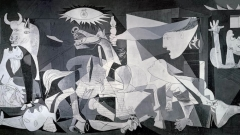
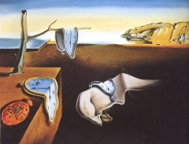

Welcome to your guide to Spain's Famous People
Spain has an abundance of people who have had a large impact on their world some of which are:
- Pablo Picasso - The infamous 20th century artist who is best known for his works such as “Gurenica” and “Les Demoiselles d’Avignon

- Rafael Nadal – Considered to be one of the best tennis players of all time.
- Antoni Gaudi – A well known architect, Known for his intricate architecture he is best known for the Church of the Sacred Family
- Salvador Dali – Yet another famous artist. He is best known for his bizarre style of paintings.

- Penelope Cruz – The Spanish actress best known for her roles in “Vanilla Sky” and “The Pirates of the Caribbean franchise."
- Kane – One of the most well-known WWE© wrestlers.